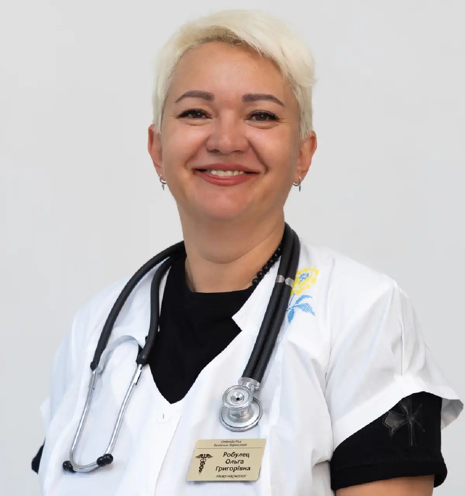

+38(068)
79 72 782
+38(068)
79 72 782Кодирование от алкоголизма уколом Эспераль
Шанс на трезвую и счастливую жизнь


Бесплатная консультация, работаем круглосуточно 24/7
Шанс на трезвую и счастливую жизнь

Дата написания: Обновляется...
Последнее обновление: Обновляется...
Кодирование от алкоголизма уколом Эспераль — это медикаментозный метод поддержки трезвости, который применяется у пациентов с алкогольной зависимостью после осмотра врача-нарколога и периода полного воздержания от спиртного. Метод направлен на формирование стойкого запрета на употребление алкоголя за счёт реакции несовместимости препарата со спиртным.
Эспераль относится к препаратам на основе дисульфирама. Его действие связано с блокировкой ферментов, участвующих в переработке алкоголя. Если после кодирования человек употребляет спиртное, в организме накапливаются токсичные продукты распада этанола, из-за чего может развиться выраженная неприятная и опасная реакция. Именно поэтому процедура проводится только добровольно, после консультации, диагностики и подробного объяснения всех возможных последствий. Кодирование уколом Эспераль не является самостоятельным «лечением навсегда». Оно помогает создать медикаментозный барьер перед употреблением алкоголя, но для устойчивого результата желательно сочетать процедуру с психотерапией, наблюдением нарколога, поддержкой семьи и изменением образа жизни.
Горячий укол от алкоголизма — это народное название инъекционного кодирования, при котором после введения препарата в вену пациент может ощущать выраженное тепло, жар, прилив по телу, покраснение лица или внутреннее ощущение «разогрева». Именно из-за этого эффекта процедуру в быту часто называют горячим уколом.
Такое название не является официальным медицинским термином. В медицинской практике речь идёт о медикаментозном кодировании препаратом, который вызывает несовместимость с алкоголем. После процедуры употребление спиртного становится опасным, потому что может вызвать резкое ухудшение самочувствия. Горячий укол от алкоголизма проводится только врачом. Перед процедурой специалист оценивает состояние пациента, уточняет срок трезвости, наличие хронических заболеваний, противопоказаний, результаты обследований и готовность человека к отказу от алкоголя. Препарат нельзя вводить человеку в состоянии опьянения, при абстиненции или без его согласия. Дисульфирам не должен назначаться пациенту при алкогольном опьянении или без полного понимания возможной реакции на алкоголь.
Кодирование уколом Эспераль применяется при алкогольной зависимости в тех случаях, когда пациент хочет отказаться от спиртного, но понимает, что одной силы воли может быть недостаточно. Метод подходит людям, которые уже прошли этап детоксикации, вышли из запоя, не употребляют алкоголь определённое время и осознанно готовы соблюдать трезвость. Перед процедурой важно, чтобы организм был очищен от алкоголя, а состояние пациента было стабильным, потому что введение препарата на фоне опьянения или выраженной абстиненции может быть опасным.
Процедура может быть рекомендована после повторяющихся запоев, частых срывов, потери контроля над количеством выпитого, сильной тяги к спиртному, неудачных самостоятельных попыток бросить пить или при высоком риске возвращения к употреблению. Часто к кодированию обращаются пациенты, которые уже понимают последствия алкоголизма для здоровья, семьи, работы и психики, но нуждаются в дополнительном сдерживающем факторе. Укол Эспераль помогает создать временный защитный барьер, который снижает вероятность импульсивного употребления алкоголя в моменты стресса, эмоционального напряжения или провокации со стороны окружения.
Кодирование также может применяться после лечения запоя, когда острое состояние уже снято, но риск повторного употребления остаётся высоким. В этот период человек может чувствовать физическое облегчение, однако психологическая тяга к алкоголю ещё сохраняется. Именно поэтому медикаментозная поддержка помогает пройти наиболее уязвимый этап восстановления и закрепить трезвость на выбранный срок.
Эспераль может использоваться как часть комплексного лечения алкогольной зависимости. Важно, чтобы пациент понимал: препарат не устраняет психологические причины зависимости, не заменяет работу с наркологом и психотерапевтом, а помогает удержаться от употребления на выбранный срок. Для более устойчивого результата кодирование желательно сочетать с консультациями специалиста, изменением привычек, поддержкой близких, восстановлением режима сна, питания и общего состояния организма.
Эспераль часто воспринимают как более современный или более удобный вариант кодирования, но важно правильно понимать разницу. Эспераль — это препарат на основе дисульфирама, поэтому его нельзя полностью противопоставлять «классическому дисульфираму». Основной принцип действия у них общий: создание несовместимости с алкоголем.
Разница может заключаться в форме препарата, схеме введения, длительности действия, переносимости, дозировке и удобстве применения для конкретного пациента. Для одних людей более удобным вариантом может быть таблетированная форма, для других — инъекционное кодирование, когда не нужно ежедневно контролировать приём таблеток. Именно поэтому выбор препарата и метода кодирования должен делать врач после осмотра.
Главное преимущество укола Эспераль для многих пациентов — дисциплинирующий эффект. Человек понимает, что препарат уже введён, срок кодирования установлен, а употребление алкоголя может вызвать тяжёлую реакцию. Это помогает сформировать психологический барьер и удержаться от спиртного в период, когда риск срыва особенно высок. При этом нельзя говорить, что Эспераль «лучше» для всех без исключения. У каждого метода есть показания, ограничения и противопоказания. Врач подбирает вариант кодирования с учётом состояния печени, сердца, нервной системы, общего здоровья, длительности зависимости и мотивации пациента.
Процедура кодирования Эспераль начинается с консультации нарколога. Врач разговаривает с пациентом, уточняет длительность употребления алкоголя, дату последнего приёма спиртного, наличие запоя, хронических заболеваний, аллергических реакций, принимаемых препаратов и предыдущего опыта лечения зависимости. После этого специалист оценивает, можно ли проводить кодирование именно сейчас. Перед введением препарата пациенту объясняют принцип действия Эспераль, возможные реакции, срок кодирования и строгий запрет на алкоголь. Человек должен добровольно согласиться на процедуру и понимать, что после кодирования нельзя употреблять не только спиртные напитки, но и любые продукты или средства, которые могут содержать алкоголь.
Сама процедура может включать инъекционное введение препарата. В практике кодирования может выполняться инъекция в вену и под лопатку. После введения препарата в вену у пациента может появиться сильное ощущение жара, тепла, прилива по телу, покраснение лица или чувство внутреннего разогрева. Именно поэтому в народе такую процедуру часто называют «горячий укол от алкоголизма». Введение под лопатку используется как дополнительный или отдельный способ медикаментозного кодирования в зависимости от выбранной схемы. После процедуры врач наблюдает за состоянием пациента, даёт рекомендации, объясняет ограничения и предупреждает о возможных последствиях употребления алкоголя. Пациенту важно строго соблюдать назначения, не проверять действие препарата спиртным и при ухудшении самочувствия обращаться за медицинской помощью.
Срок кодирования уколом Эспераль подбирается индивидуально после консультации с врачом-наркологом. Чаще всего применяются варианты на 3, 6 или 12 месяцев. Выбор срока зависит от общего состояния пациента, длительности алкогольной зависимости, частоты запоев и срывов, уровня мотивации, наличия хронических заболеваний, психологической готовности к трезвости и рекомендаций специалиста. Врач оценивает не только желание пациента закодироваться, но и то, насколько безопасно проводить процедуру именно на выбранный период.
При этом важно помнить, что любой срок кодирования — 3, 6 или 12 месяцев — не является гарантией полного избавления от зависимости без дальнейшей работы над собой. Укол Эспераль создаёт медикаментозный запрет на употребление алкоголя, но не устраняет психологические причины зависимости, привычные сценарии поведения, стрессовые реакции и внутренние конфликты. Поэтому даже при длительном кодировании желательно наблюдаться у нарколога, работать с психологом или психотерапевтом, избегать провоцирующих ситуаций и формировать здоровый образ жизни. Чем активнее пациент участвует в лечении, тем выше вероятность устойчивого результата после окончания срока действия препарата.
Стоимость кодирования от алкоголизма горячим уколом Эспераль начинается от 8000 грн
| Популярные услуги | Цена |
|---|---|
| Консультация нарколога | От 1500 грн |
| Капельница от алкоголя | От 2199 грн |
| Вывод из запоя на дому | От 2199 грн |
| Кодирование от алкоголизма | От 6000 грн |
После укола Эспераль возможны побочные реакции, поэтому процедура должна проводиться только под контролем специалиста. Перед кодированием врач оценивает состояние пациента, уточняет наличие хронических заболеваний, проверяет, когда последний раз употреблялся алкоголь, и определяет, нет ли противопоказаний к введению препарата. Такой подход помогает снизить риск осложнений и подобрать наиболее безопасную схему кодирования. У некоторых пациентов после процедуры может появляться слабость, сонливость, головная боль, неприятный привкус во рту, тошнота, дискомфорт или болезненность в области инъекции, покраснение кожи, ощущение жара, прилив тепла по телу или кратковременное ухудшение общего самочувствия. Обычно такие реакции требуют наблюдения и оценки врача, особенно если они выражены или сохраняются длительное время.
Также возможны индивидуальные реакции со стороны нервной системы, желудочно-кишечного тракта, сердечно-сосудистой системы или печени. Пациент может ощущать тревожность, раздражительность, нарушение сна, тяжесть в животе, изменение аппетита, сердцебиение или нестабильность давления. Не у всех эти симптомы возникают, но врач обязательно предупреждает о возможных реакциях заранее, чтобы человек понимал, на что обращать внимание после процедуры. Именно поэтому перед кодированием важно сообщить врачу обо всех хронических заболеваниях, перенесённых осложнениях, аллергических реакциях и препаратах, которые пациент принимает постоянно. Особенно важно рассказать о болезнях печени, сердца, почек, эндокринной системы, неврологических нарушениях, судорогах, психических расстройствах и непереносимости лекарств. Скрытая информация может повысить риск побочных реакций и сделать процедуру небезопасной.
Особое внимание уделяется состоянию печени, так как препараты на основе дисульфирама могут создавать дополнительную нагрузку на организм. Если у пациента уже есть заболевания печени, повышенные печёночные ферменты, последствия длительного употребления алкоголя или другие нарушения, врач может рекомендовать дополнительные анализы перед кодированием. Это помогает оценить риски и понять, можно ли проводить процедуру в конкретной ситуации. Если после укола появляются выраженная слабость, боль в груди, затруднение дыхания, сильное сердцебиение, резкое падение или повышение давления, потеря сознания, судороги, желтушность кожи или глаз, сильная тошнота, рвота, спутанность сознания или другие тревожные симптомы, необходимо срочно обращаться за медицинской помощью. Такие проявления нельзя игнорировать или пытаться лечить самостоятельно.
Употребление алкоголя после укола Эспераль может привести к тяжёлой реакции. Препарат блокирует нормальную переработку спиртного, из-за чего в организме накапливаются токсичные вещества. Это может вызвать резкое покраснение лица, жар, сильную тошноту, рвоту, головную боль, сердцебиение, скачки давления, слабость, тревогу, боль в груди, одышку и выраженное ухудшение состояния. В тяжёлых случаях реакция на алкоголь после дисульфирама может быть опасной для жизни. Возможны серьёзные нарушения работы сердца, дыхания, нервной системы и сосудов. Поэтому после кодирования нельзя «проверять» препарат, употреблять даже небольшие дозы спиртного или использовать алкогольсодержащие средства без консультации врача.
Важно учитывать, что алкоголь может содержаться не только в напитках. Он может присутствовать в некоторых настойках, лекарственных растворах, кондитерских изделиях, соусах, косметических средствах, ополаскивателях для рта и других продуктах. Пациенту нужно внимательно относиться к составу всего, что он употребляет или использует. Медицинские источники предупреждают, что на фоне дисульфирама употребление алкоголя может вызвать опасную реакцию, а пациент должен быть заранее подробно проинформирован о возможных последствиях.
Подготовка к кодированию уколом Эспераль начинается с полного отказа от алкоголя. Перед процедурой пациент должен находиться в трезвом состоянии. Если человек находится в запое или испытывает выраженную абстиненцию, сначала проводится детоксикация и стабилизация состояния, а уже после этого врач решает вопрос о кодировании. Перед процедурой нарколог оценивает общее состояние пациента. Могут учитываться давление, пульс, работа сердца, состояние печени, наличие хронических заболеваний, психоэмоциональное состояние и риск осложнений. При необходимости врач может рекомендовать анализы, ЭКГ или консультации других специалистов.
Очень важно честно сообщить врачу о последнем употреблении алкоголя, количестве спиртного, принимаемых лекарствах, заболеваниях печени, сердца, почек, эндокринной системы, судорожных приступах, психических расстройствах и аллергиях. Скрывать информацию опасно, потому что это может повысить риск побочных реакций. Перед кодированием пациент должен понимать принцип действия препарата, срок кодирования, ограничения и последствия употребления алкоголя. Процедура проводится только при добровольном согласии. Принудительное кодирование или введение препарата без ведома человека недопустимо и опасно.
Кодирование препаратом Эспераль подходит пациентам с алкогольной зависимостью, которые осознают проблему, хотят отказаться от спиртного и готовы соблюдать режим трезвости. Метод может быть полезен людям, у которых уже были срывы, повторные запои, сильная тяга к алкоголю или страх не справиться самостоятельно. Лучше всего кодирование работает у мотивированных пациентов. Если человек понимает последствия употребления алкоголя после процедуры, готов сотрудничать с врачом и менять образ жизни, медикаментозный барьер может стать важной поддержкой на пути к трезвости.
Метод может не подойти пациентам с тяжёлыми заболеваниями сердца, выраженными нарушениями функции печени, некоторыми психическими расстройствами, судорожными состояниями, индивидуальной непереносимостью препарата и другими противопоказаниями. Окончательное решение принимает врач после обследования. Также важно понимать, что кодирование не решает проблему зависимости полностью, если человек не работает с психологическими причинами употребления. Алкогольная зависимость часто связана со стрессом, тревогой, привычным окружением, эмоциональными конфликтами и нарушением контроля. Поэтому для устойчивого результата рекомендуется сочетать кодирование с консультациями нарколога, психотерапией, поддержкой близких и профилактикой срывов.
Круглосуточная консультация нарколога помогает получить профессиональную помощь в ситуации, когда пациент или его близкие не знают, можно ли проводить кодирование, сколько нужно воздерживаться от алкоголя, что делать после запоя и какой метод лечения выбрать. Специалист может оценить состояние, объяснить риски, подсказать дальнейшие шаги и определить, требуется ли детоксикация перед процедурой. Обращение к наркологу особенно важно, если у человека был длительный запой, выраженная слабость, тремор, бессонница, тревога, скачки давления, тошнота, рвота, боли в сердце или спутанность сознания. В таких случаях сначала необходимо стабилизировать состояние, а не сразу проводить кодирование.
Кодирование уколом Эспераль должно выполняться только после медицинской оценки и добровольного согласия пациента. Врач помогает подобрать подходящий срок кодирования на 3, 6 или 12 месяцев, объясняет правила безопасности и даёт рекомендации, которые помогают снизить риск срыва. Своевременная консультация нарколога позволяет не откладывать лечение, избежать опасных решений и выбрать безопасную тактику восстановления. Чем раньше пациент получает профессиональную помощь, тем выше шанс остановить развитие зависимости, стабилизировать состояние и вернуться к трезвой жизни.
Для консультации и вызова нарколога на дом звоните по телефону: +38(050-021-69-57)

Статья проверена экспертом
Могучев Станислав
Врач терапевт, ординатор
Возможно интересная статья:
Янтарная кислота, Бетаргин и Энтеросгель при алкогольной интоксикации

Да, мы строго соблюдаем полную конфиденциальность на всех этапах лечения. Информация о пациенте, диагнозе и прохождении терапии не передаётся третьим лицам. Обращение к нам не влечёт постановку на учёт. Вы можете быть уверены в безопасности и анонимности.
Программа лечения разрабатывается индивидуально после консультации со специалистом. Учитываются вид зависимости, её длительность, физическое и психологическое состояние пациента. Такой подход позволяет повысить эффективность терапии и снизить риск срыва. Мы не используем шаблонные решения.
Да, мы сопровождаем пациентов и после основного курса лечения. Проводятся консультации, рекомендации по адаптации и профилактике рецидивов. При необходимости возможна дальнейшая психологическая поддержка. Это помогает сохранить результат и вернуться к полноценной жизни.
Александр

Решила сделать укол от алкоголизма по рекомендации подруги, которая проходила эту процедуру в этом же центре. Я сомневалась, но врачи всё объяснили, успокоили. После укола не чувствую тяги к алкоголю, хотя раньше сложно было представить день без выпивки. Сейчас наслаждаюсь трезвостью, чувствую себя намного лучше.
Анонимно
Дуже довго не міг самостійно позбавитися залежності, тому зважився на підшивку. Процедура пройшла успішно, і з того часу я навіть не думаю про спиртне. Страх перед можливими наслідками допомагає триматися на плаву, а підтримка фахівців – величезна підмога у цьому нелегкому шляху. Центр надає як фізичну, а й моральну допомогу. Вдячний їм за другий шанс.
Анонимно
Я никогда не думал, что психологическое воздействие может настолько сильно повлиять на мою жизнь. Врач помог осознать всю серьезность ситуации, и теперь алкоголь не вызывает у меня никакого интереса. Процедура безопасна и эффективна, рекомендую тем, кто хочет по-настоящему изменить свою жизнь.
Анонимно
Я прошла кодирование гипнозом, и это было удивительное переживание. Во время сеанса я почувствовала глубокое расслабление, а потом – будто внутри что-то изменилось. Сейчас я свободна от алкоголя и наслаждаюсь этим состоянием. Благодарю центр за профессионализм и заботу! Отдельная благодарность Станиславу Вячеславовичу
Анонимно
Чесно кажучи, боявся рецидиву, але з процедури минуло півроку, і я навіть не думаю про випивку. Життя почало змінюватися на краще. Дякуємо лікарям за підтримку та мотивацію!
Анонимно
Після багаторічної боротьби із залежністю вирішила звернутись в клінку. Спочатку переживала, але лікарі дуже докладно розповіли про процес та можливі наслідки. Зараз я не п’ю вже 8 місяців і почуваюся чудово. Я така щаслива, що знайшла цей центр і знайшла контроль над своїм життям.
Анонимно
Метод Долженко казался мне странным, но я решил попробовать. Оказалось, что это не просто кодировка, а глубокая работа с психикой. Это позволило мне кардинально изменить отношение к алкоголю. Уже год я не пью, и не планирую возвращаться к прежней жизни. Простое человеческое спасибо!
Анонимно
Гипноз помог мне избавиться от постоянной тяги к алкоголю. После сеансов я заметила, что стала спокойнее и увереннее в себе. Теперь алкоголь меня больше не интересует. Центр мне очень помог, и я благодарна за их заботу и поддержку.
Номер телефона:
+380 (68) 797 27 82
+380 (50) 021 69 57
Адрес наркологического центра вашего города уточняйте по
телефону
Работаем в: Киеве, Одессе, Львове, Харькове, Днепре,
Запорожье, Черкассах, Чугуеве, Черноморске, Каменском
Telegram: t.me/umbrellaplus
График работы: Круглосуточно